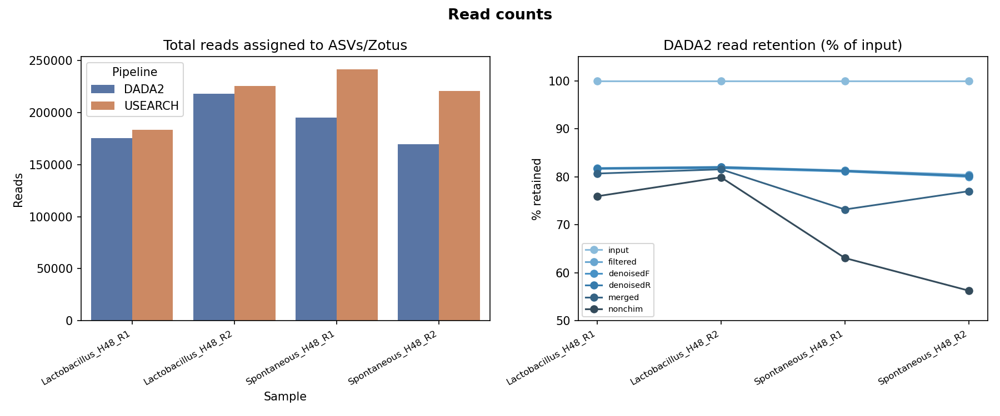
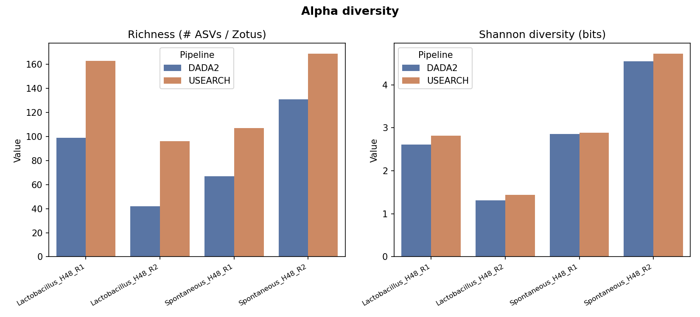
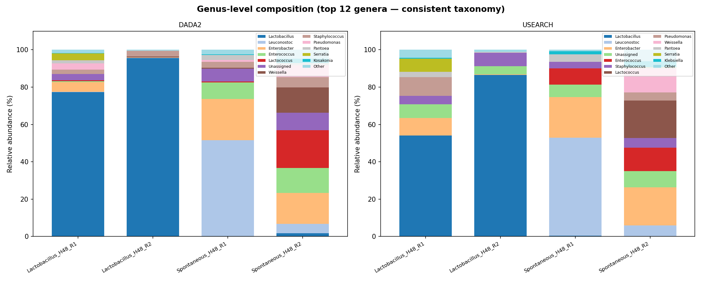
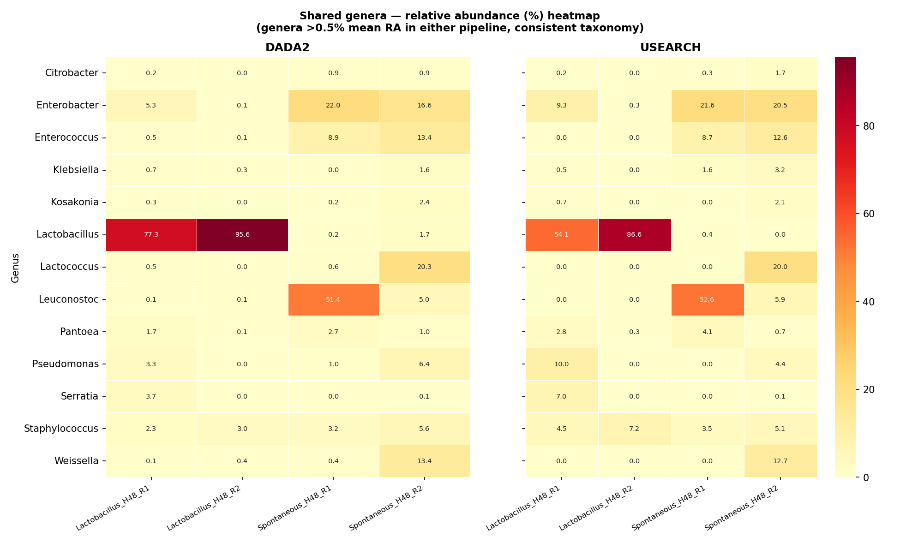
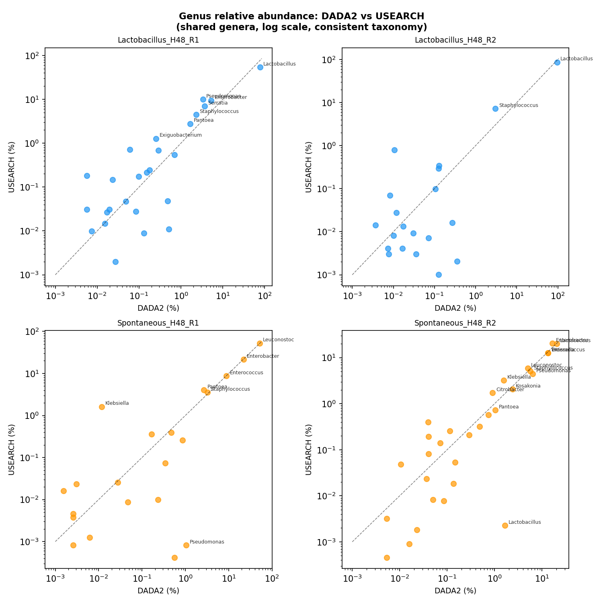
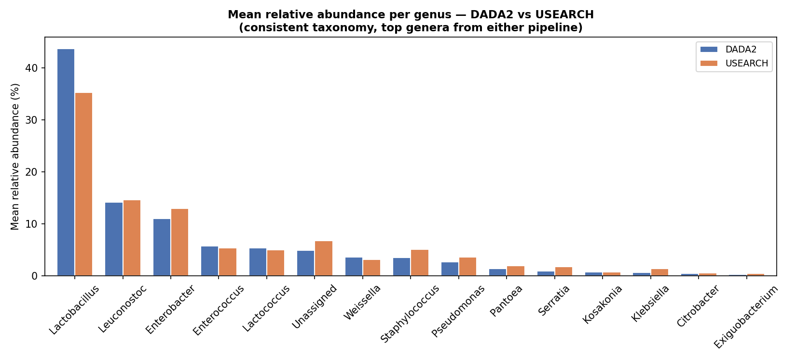

Comparison of USEARCH and DADA2
Overview
This page presents a side-by-side comparison of two widely used amplicon sequence processing pipelines — DADA2 and USEARCH — applied to the same set of 16S rRNA samples. The goal is to evaluate concordance in read-count recovery, alpha diversity estimates, and genus-level taxonomic composition.
The four samples analysed represent a fermentation experiment with two treatment groups each measured in biological duplicate at 48 h:
Lactobacillus_H48_R1andLactobacillus_H48_R2— Lactobacillus-inoculated communitiesSpontaneous_H48_R1andSpontaneous_H48_R2— spontaneous (uninoculated) fermentation communities
compare_pipelines.py, which loads count tables and taxonomy
files from the dada2/ and usearch/ directories,
computes summary statistics, and generates the figures shown below.
Methods
Both pipelines were run independently on the same paired-end FASTQ files. Key parameters and outputs are summarised below.
| Step | DADA2 | USEARCH |
|---|---|---|
| Unit | ASV (exact sequences) | ZOTU (zero-radius OTU) |
| Error model | Parametric, sample-learned | Unoise3 statistical model |
| Chimera removal | removeBimeraDenovo | Built into unoise3 |
| Taxonomy | SILVA (assignTaxonomy) | SILVA + dadaist2 (MA classifier) |
| Count table | samples_with_abundances.csv |
merged.tsv |
Taxonomic composition was compared at genus level. Genera detected at >0.5 % mean relative abundance in at least one pipeline were considered for heatmap and correlation analyses.
1. Read Counts & QC Retention
Total reads assigned to ASVs/ZOTUs are compared across the two pipelines for each sample. The right panel shows the proportion of reads retained at each DADA2 processing stage relative to raw input.

2. Alpha Diversity
Observed richness (number of detected ASVs or ZOTUs) and Shannon diversity (bits) are compared for each sample and pipeline.

3. Genus-level Composition
Reads are collapsed to genus level and expressed as relative abundance. The top 12 genera (by mean abundance across samples) are shown; all remaining taxa are pooled into Other.

4. Shared Genera — Abundance Heatmap
Genera detected by both pipelines at >0.5 % mean relative abundance are displayed as a heatmap, with DADA2 and USEARCH abundances shown side-by-side on a common colour scale.

5. Per-sample Genus Correlation
For each sample, genus relative abundances are plotted on log-log axes to assess quantitative agreement between pipelines. The dashed line represents perfect 1 : 1 concordance. Genera contributing >1 % in either pipeline are labelled.

6. Side-by-side Comparison
A combined view of genus-level composition, facilitating direct visual comparison of the community profiles recovered by each pipeline across all four samples.

Summary
Both pipelines recover highly concordant community structure at genus level. Key observations:
- Read recovery — DADA2 and USEARCH assign comparable numbers of reads to sequence variants, though DADA2 applies additional chimera filtering that can reduce total counts slightly.
- Richness — USEARCH ZOTUs typically yield higher observed richness than DADA2 ASVs; some of this difference reflects algorithm-specific splitting of closely related sequences.
- Taxonomic composition — Dominant genera are consistently detected by both pipelines. Minor discrepancies arise from differences in taxonomic assignment (classifier and database settings) and from sequences that pass one pipeline's quality thresholds but not the other's.
- Correlation — Log-scale Pearson correlations for shared genera are generally high (>0.9), supporting the reproducibility of community-level patterns across pipelines.